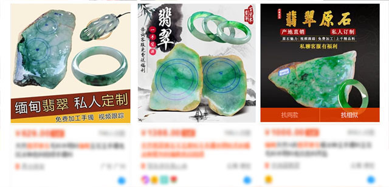
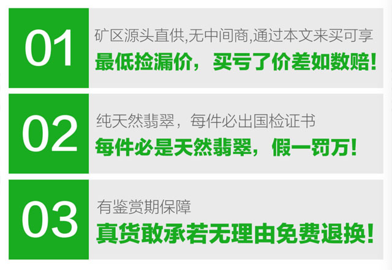

您好！我是翡翠辨别师薇薇，来自缅甸景栋，毕业于缅甸地理科大学，因祖上代代都在边陲小镇瑞丽小镇经营翡翠原石买卖，以翡翠原石开矿，雕刻制作，翡翠毛料为生，传到我这一代已有几十年之久，我本人目前正在申请雕刻师傅的工艺传承人不让这份传统的工艺丢失！
因为从小受到父辈的熏陶我也喜欢上了翡翠！大学毕业后成绩拔尖的我原本可以有更好的选择，但是我毅然决然的选择了回到家乡发展翡翠这个行业！ 只因为心中的那份坚持所以我每个月都会定期去缅甸的翡翠市场精心挑选自己心仪的翡翠原石，买到喜欢的翡翠原石都会运到自己店里，进行销售或者加工成成品！
每天加我微信的前30名朋友
送价值1000元翡翠练手原石一枚
薇薇微信：
（点击复制）
因为热爱所以大部分时间都是在缅甸中国来回跑，只为找到材质更好的翡翠毛料，一直坚持不为别的只为了对得起我的每一个顾客与自己内心的梦想！虽然过程比较难熬，但是从来不会有想要放弃说的念头，在挑选翡翠毛料的同时内心也充满了期待与惊喜！这大概就是痛并快乐着吧！
随着社会的发展翡翠的走红，市场上出现了好多以假乱真的不法商家，许多商贩拿着较差较不起眼的假翡翠冒充天然翡翠玉石，不仅如此价格更是高的难以置信一路往上炒，飘升到了无法想象的地步，就因为这样把翡翠的市场搞得乌烟瘴气，现在的翡翠市场被弄的出高价都不一定能买得到正真的翡翠真品。
凡事开头的总是较难的也是较好的，所以说购买翡翠还是要从源头开始才是较有保障的，在大家都在把作假翡翠往上炒的时候，只有薇薇在一直坚持着不变的初心，我虽然不能说价格是最低的，但是我绝对敢说的是绝对是正品性价比较高的！尽管现在的天然翡翠供不应求，但是我们绝不会借着这个机会涨价，坚持做有品质保证的产品！
自己有翡翠需要辨别的朋友
可以加我，帮你看看是不是货真价实
薇薇微信：（点击复制）
翡翠好不好，LIVE才知道
现在的网络发展比较迅速很多人只能够通过一些图片来观察心仪的翡翠原石或者成品，但是这样就有一个坏处很多商家就会把东西美颜，色差调的很大，调的美美的发给客户！ 然而我们依然坚持在真实的原相机的镜头下的翡翠给大家了解到翡翠真实的样子，大家买到好的翡翠我们才能安心！

一些朋友拿某宝翡翠价格跟我们对比，说实话是对我们朴实工作的不尊重，之所以这么讲是因为某宝翡翠便宜的原因很恶劣，主要是以下几点：
由于天然翡翠开采成功的几率非常低，有些商贩为了增加颜色与翡翠的光泽度就选择了人工注入色素，这样的翡翠如果长期佩戴可能会对身体造成一定影响!再有就是一些商家变得非常工业化雕刻，因为这样省时省力，但是这样的雕刻虽然销量大却失去了翡翠本该有的灵性，机器雕工木纳呆板完全没有美感，这些都是传统工艺人所唾弃的！
（自家翡翠严格检查中）
自己有翡翠需要辨别的朋友
可以加我，帮你看看是不是货真价实
薇薇微信：（点击复制）
我这里所有原石都是我们自己从缅甸挑选毛料，也不瞒大家说只有这样才能把成本压到较低压到极致，不然的话商人从缅甸拿过来的价格都会涨几倍，就没办法获得较低价格的翡翠原石毛料了！
有时，到了傍晚我会在店里依据原石的色和走向来设计翡翠镶嵌的款式，让翡翠不仅优雅大气，也能够变得时尚潮流起来！ 可能因为自己本来就是少数民族所以自己在设计的过程中也会加入一些民族特色让整个翡翠变得更加生动！
看翡翠视频和真实上身图的朋友
可以加我，让你看得清清楚楚明明白白
薇薇微信：（点击复制）
与家人一起去缅甸直采原石后，取料、切割、设计、雕刻一直到发货都由我亲自参与，所以每天工作比较忙。有时候有些客户的信息都来不及回， 很高兴能得到客户的信任和谅解，我家的翡翠漏价直销一直是用实力说话。
本分老实的做这个行业很久了每天都会有一些老顾客给我反馈，他们都对我这个傣家小妹百分百的信任，每个卖出的货品都是真实天然翡翠，所以很多老客户都会给我做买家秀！
我们不做一锤子买卖
只要是购买过我们翡翠的顾客基本上全部回头客,全都会复购
只因正真的做到了源头漏价不欺骗顾客
所以我们有这个自信把它发扬光大！
薇薇微信：（点击复制）
每周我们都会做买家秀评选，拍得较认真的会收到我送出的精美礼物，结果越来越多的客人都发来了佩戴我们翡翠的漂亮照片过来，这是我较享受的时刻，也是对我工作的肯定。
薇薇给您的承诺
我们家的翡翠原石都是缅甸矿区直采，每件货品都是亲眼看着它问世这样的感觉就像是自己的孩子出生一样的充满成就感，正因为每件产品都是自己亲手做的所以杜绝一切的人工处理，我们的三不原则：一不注胶 二不染色 三更不会以假乱真只会把真实的天然翡翠带到您的身边！
其次买我们翡翠的朋友我敢保证绝对是较低价捡漏，每件翡翠都是天然翡翠假一赔十，真货敢承诺无理由退换，有观赏期保障！
认真对待每一个喜欢翡翠的朋友
我们把每一个购买翡翠喜欢翡翠的朋友都当做至亲的家人，每一件好的翡翠也让我认识到了来自五湖四海的朋友，正是因为这样才让我们更加注重货品的品质，不忘初心方得始终这也是父辈时时刻刻都在我耳边念叨的祖训，我不能让几代人好不容易积攒下来的好名声到我这就砸了招牌，也不愿意破坏了这样好的民族友谊，她们不嫌弃我的口音别扭还愿意与我一起维护翡翠界的这份美好！
认真加工真翡翠天然翡翠将是我毕生追随的梦想，希望以上这些内容能够帮助看到文章的各位让大家不再上当，愿大家都能识货，看货，懂货！
每天加我微信的前30名朋友
送价值1000元翡翠练手原石一枚
薇薇微信：（点击复制）
每天我都会自己拍图
总觉得自己拍的照片较能清楚的看到翡翠的完美和不完美的地方，就像人一样。 给客户看到的也一定要是较真实的情况，虽然累但是很有价值。
薇薇语录：买翡翠成品,不如看原石，买翡翠原石加工成品,价格不但便宜,而且不会有假！
我家在缅甸矿区做翡翠已经十三年
想买一手矿区翡翠的朋友
薇薇微信：（点击复制）